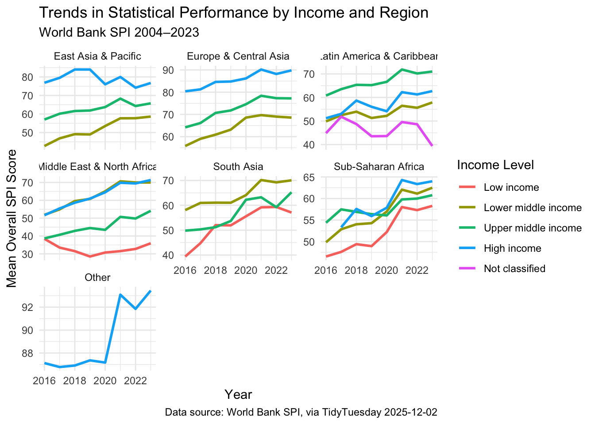
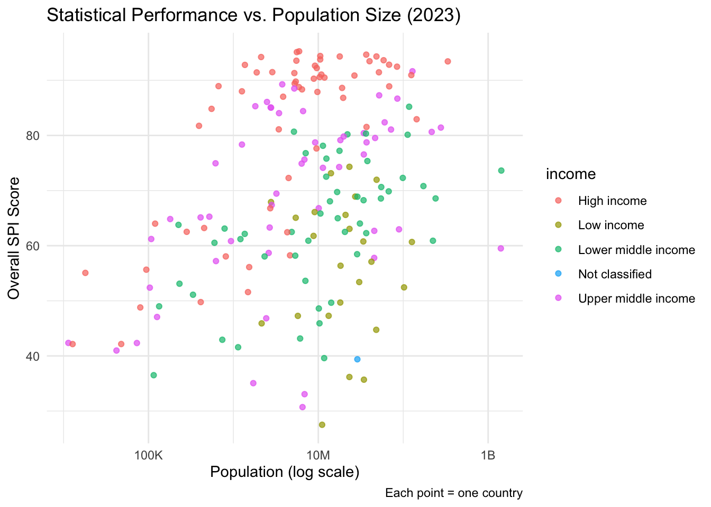

Example Analysis: Statistical Performance Indicators
The SPI data used here originate from the World Bank [Bank (2023)], and are accessed via the TidyTuesday dataset curated by Nicola Rennie and the R4DS community [Rennie and community (2025)].
Background
The Statistical Performance Indicators (SPI), developed by the World Bank, provide a quantitative assessment of how well national statistical systems perform across five dimensions: 1. Data use 2. Data services 3. Data products 4. Data sources 5. Data infrastructure
The SPI covers nearly all countries worldwide (≈ 99% of the global population) and spans 2004–2023. It serves as a diagnostic tool to strengthen national data systems.
Note
Purpose: To monitor and improve national statistical systems’ capacity and performance.
1. How has a country’s statistical performance changed over time?
2. Is statistical performance related to income level or population size?
3. Which pillar do countries score lowest in?
Small differences in SPI between countries may reflect data imprecision rather than true performance gaps.
Data Wrangling
We clean and simplify the dataset to focus on major regions and income levels.
ggplot(spi_clean, aes(x = year, y = mean_spi, color = income)) +geom_line(size =1) +facet_wrap(~ region, scales ="free_y") +labs(title ="Trends in Statistical Performance by Income and Region",subtitle ="World Bank SPI 2004–2023",x ="Year",y ="Mean Overall SPI Score",color ="Income Level",caption ="Data source: World Bank SPI, via TidyTuesday 2025-12-02" ) +theme_minimal()
Warning: Using `size` aesthetic for lines was deprecated in ggplot2 3.4.0.
ℹ Please use `linewidth` instead.

Relationship with Population Size
We explore whether countries with larger populations have higher or lower SPI.
spi_recent <- spi |>filter(year ==2023, !is.na(population), !is.na(overall_score))ggplot(spi_recent, aes(x = population, y = overall_score, color = income)) +geom_point(alpha =0.7) +scale_x_log10(labels = scales::label_number(scale_cut = scales::cut_short_scale() )) +labs(title ="Statistical Performance vs. Population Size (2023)",x ="Population (log scale)",y ="Overall SPI Score",caption ="Each point = one country" ) +theme_minimal()

Which Pillar Scores Lowest?
We calculate the average score per pillar across all countries in 2023.
The SPI data reveal consistent improvement in statistical performance across all regions since 2004, particularly in high-income countries. However, data infrastructure and data sources pillars remain relatively weak compared with data use or services. Population size shows no strong correlation with SPI — suggesting that institutional quality matters more than scale. Future research could link SPI trends with governance or digital infrastructure indicators.